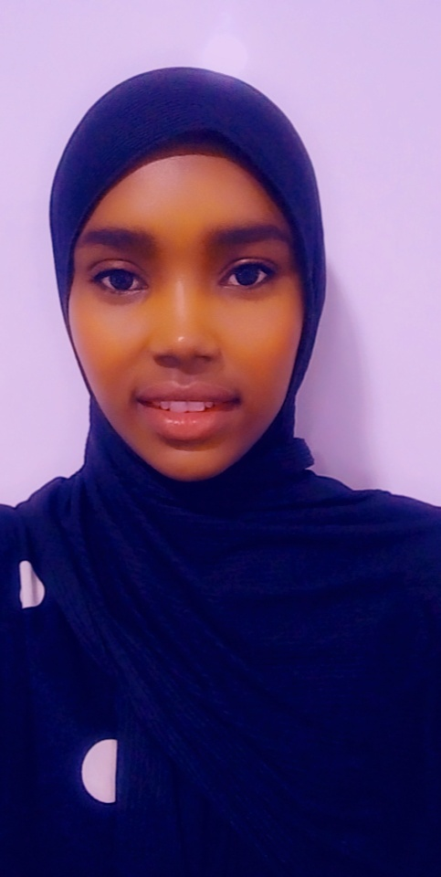

Hello My name is
Gumato Roba
currently pursuing Diploma in Information Technology
I want to be a backend engineer

About me

I am Gumato and I am interested in a career technology.As a software Developer,I believe that Technology represents
unlimited possibilities because it combines technical knowledge with interpersonal skills.
Gumato is a driven Software developer. She has an interest in building innovative tech solutions
that address big societal problems.With her skills in Front-end web development she created a website
that allows customers to buy and order braids online.She is inspired to work in tech companies to grow her
skills and to be role model to young girls from her community.